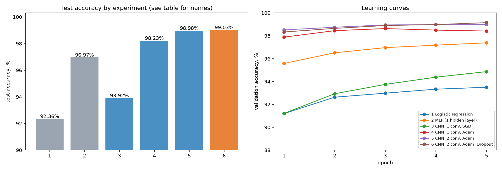
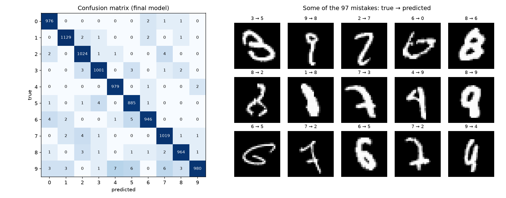

Six models on the open MNIST dataset. I change one thing at a time and measure how many digits each model gets wrong.
Bolat Rauan · Stream 2, Practice 2
Problem
Why read digits automatically?
Handwritten numbers are everywhere: postal codes, bank forms, exam answer sheets, delivery receipts. Typing them in by hand is slow and error-prone. A model that reads digits reliably saves time, but every mistake can mean a wrong amount or a wrong address. So the question is:
Which model changes actually reduce mistakes, and by how much?
Dataset
MNIST: 70 000 handwritten digits
60 000training images (10% held out for validation)
10 000test images, never used for training
28 × 28grayscale pixels, digits 0–9
Method
One change per experiment
All models use the same data split, the same random seed, 5 epochs and batch size 128. Only the listed change differs, so the effect of that change is clear.
Logistic regression. Baseline: every pixel gets a weight. It cannot combine pixels into shapes.
+ Hidden layer (MLP). 128 ReLU neurons learn combinations of pixels, such as parts of strokes.
+ Convolution. Small 3×3 filters slide over the image and detect edges and curves anywhere. Trained with plain SGD.
SGD → Adam. Same network with an adaptive optimizer that adjusts the step size for each weight.
+ Second conv layer. The first layer finds edges, and the second combines them into loops and corners.
+ Dropout 0.3. During training, 30% of neurons are switched off at random, so the network cannot memorise and must generalise.
Results
Accuracy on 10 000 unseen test images
Experiment
Change
Parameters
Train acc
Test acc
Mistakes
Time

Error analysis
What does the best model still get wrong?

Live demo · MVP
Draw a digit
The final CNN runs right here in the browser, with the weights exported from Keras. Draw one digit, large and centred.
What the model sees (28×28):
Prediction
–
Draw something to start
Conclusion
What I learned
Limitations and next steps
MNIST digits are clean and centred. Real forms are noisier, so the next step is data augmentation (rotation, shift, noise) or real scanned samples.
5 epochs only. More epochs with early stopping, and batch normalisation, could push accuracy higher.
Each result comes from one run with one seed. Repeating with several seeds would show how stable the differences are.